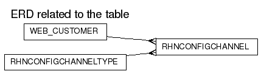

RHNCONFIGCHANNEL
DDL scriptColumns
| Name | Type | Nullable | Default value | Comment |
|---|
| ID | NUMBER(38) | N | | |
| ORG_ID | NUMBER(38) | N | | |
| CONFCHAN_TYPE_ID | NUMBER(38) | N | | |
| NAME | VARCHAR2(128) | N | | |
| LABEL | VARCHAR2(64) | N | | |
| DESCRIPTION | VARCHAR2(1024) | N | | |
| CREATED | DATE | N | (sysdate) | |
| MODIFIED | DATE | N | (sysdate) | |
Primary key:
| Constraint Name | Columns |
|---|
| RHN_CONFCHAN_ID_PK | ID
|
Foreign Keys:
Options:
| Option | Settings |
|---|
| Tablespace | DATA_TBS |
| Index Organized | No |
| Generated by Oracle | No |
| Clustered | No |
| Nested | No |
| Temporary | No |
Indexes:
Referenced by:
Triggers
RHN_CONFCHAN_DEL_TRIG
Legend: string keyword reserved word operator
CREATE TRIGGER
rhn_confchan_del_trig
before delete on rhnConfigChannel
for each row
REFERENCING NEW AS NEW OLD AS OLD
declare
cursor snapshots is
select snapshot_id id
from rhnSnapshotConfigChannel
where config_channel_id = :old.id;
begin
for snapshot in snapshots loop
update rhnSnapshot
set invalid = lookup_snapshot_invalid_reason('cc_removed')
where id = snapshot.id;
delete from rhnSnapshotConfigChannel
where snapshot_id = snapshot.id
and config_channel_id = :old.id;
end loop;
end;
RHN_CONFCHAN_MOD_TRIG
Legend: string keyword reserved word operator
CREATE TRIGGER
rhn_confchan_mod_trig
before insert or update on rhnConfigChannel
for each row
REFERENCING NEW AS NEW OLD AS OLD
begin
:new.modified := sysdate;
end;